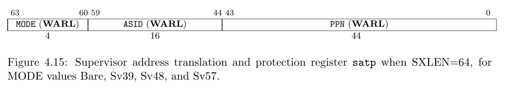
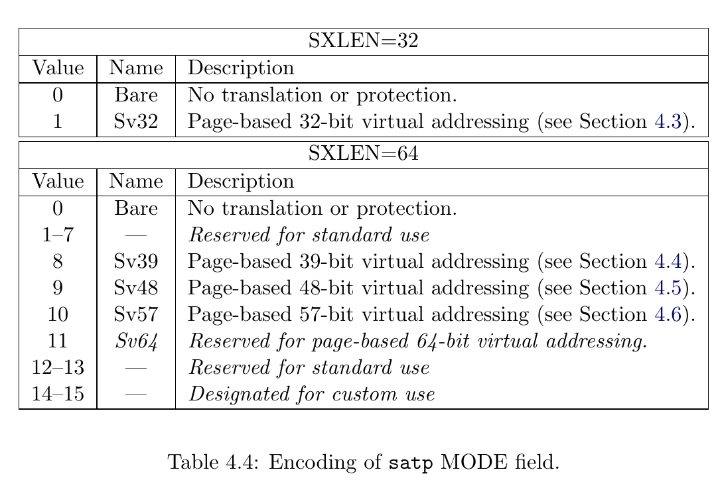
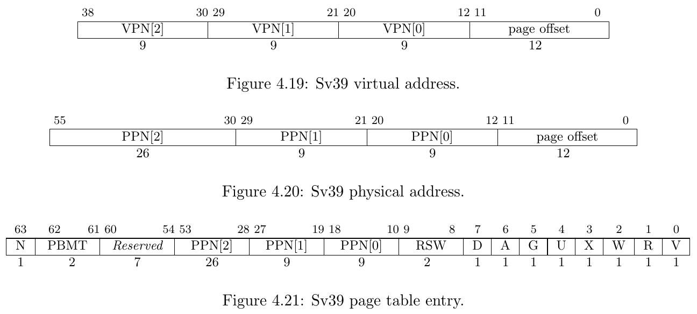
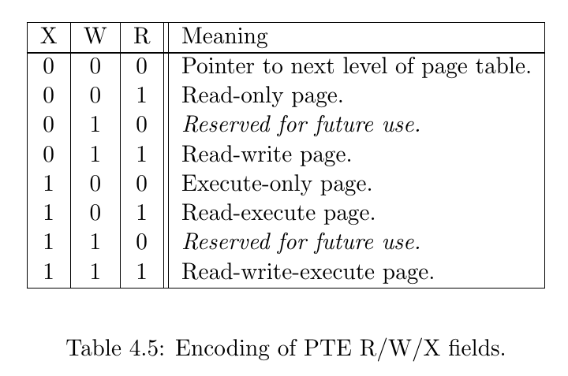
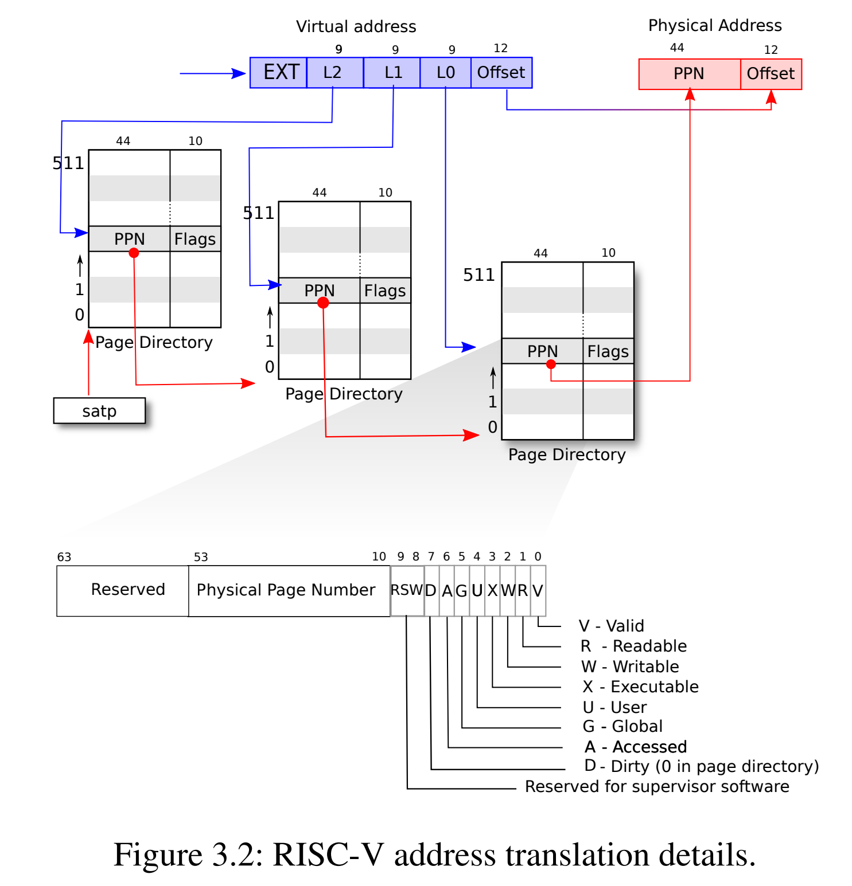
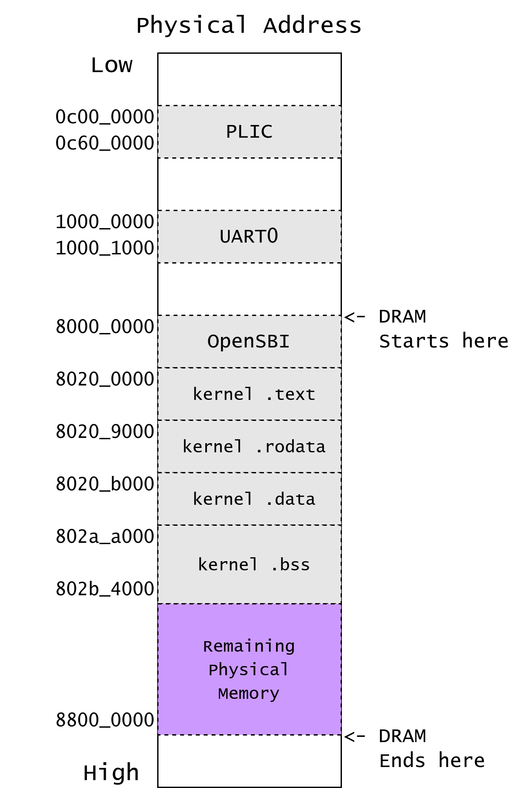
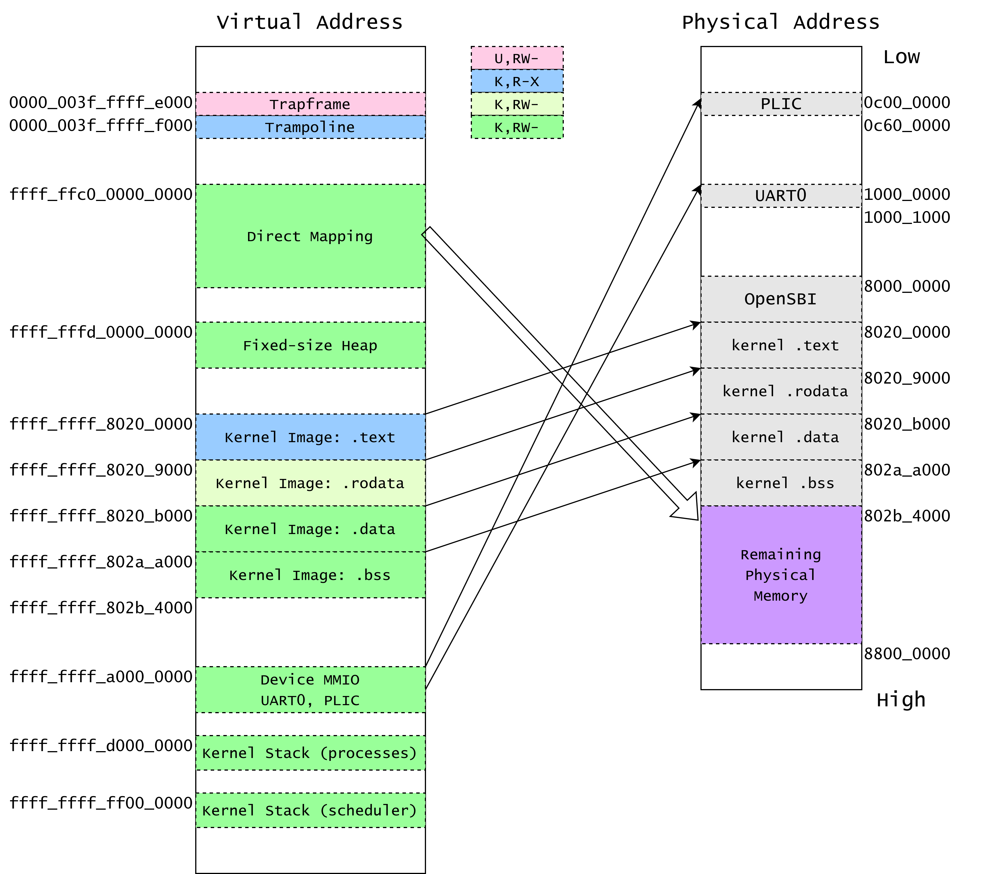
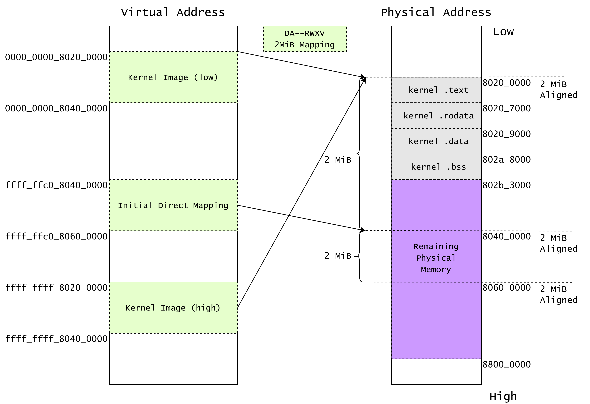

RISC-V 页表模型 & xv6 内核页表¶
satp¶
satp (Supervisor Address Translation and Protection) 寄存器是控制 S mode 和 U mode 下地址翻译的寄存器，其中包含三个属性：MODE, ASID 和 PPN。
This register holds the physical page number (PPN) of the root page table, i.e., its supervisor physical address divided by 4 KiB; an address space identifier (ASID), which facilitates address-translation fences on a per-address-space basis; and the MODE field, which selects the current address-translation scheme. Further details on the access to this register are described in Section 3.1.6.5.

Mode 表示使用的地址翻译模式，0 则表示禁用地址翻译，所有请求的地址均作为物理地址看待，PPN 表示根页表的基地址。在我们的课程中，我们将使用 Sv39 作为页表模式。
我们暂且不需要理解 ASID 的作用。

Sv39¶
RISC-V 的 Sv39 模式支持了 39-bit 的虚拟地址空间，每个页面大小 4KiB。
有效的虚拟地址为 64 位，但是 63-39 位必须与第 38 位相同，否则会产生 Page Fault 异常。所以，Sv39 的虚拟地址空间一共为 (1 << 39) = 512 GiB 的空间，其中分为高地址和低地址各 256 GiB 的空间。
Sv39 implementations support a 39-bit virtual address space, divided into 4 KiB pages. An Sv39 address is partitioned as shown in Figure 4.19. Instruction fetch addresses and load and store effective addresses, which are 64 bits, must have bits 63–39 all equal to bit 38, or else a page-fault exception will occur. The 27-bit VPN is translated into a 44-bit PPN via a three-level page table, while the 12-bit page offset is untranslated.

虚拟地址分为四部分：VPN[2-0] (Virtual Page Number) 和 page offset。三级 VPN 表示在三级页表中的 index, 而 page offset 表示当前地址在被翻译的页面中的偏移量。
Sv39 中的 PTE 长度为 8-byte，分为两部分：PPN 和 Flags。PPN (Physical Page Number) 和虚拟地址中的 page offset 组成最终的物理地址，Flags 则表示该虚拟地址页面的访问权限等信息。
Flags 定义如下：
- D, A: Dirty, Accessed。表示该页面最近被访问 / 写入过。
- G: Global。表示该映射关系在所有页表中均存在。
- U: User。表示该映射关系允许在用户权限下访问。
- V: Valid。该 bit 表示此 PTE 为有效 PTE，否则整个 PTE 视为无效。
- R, W, X: Read, Write, Executable 权限
RWX 定义如下图所示：
注意 XWR == 3'b000 的情况表示物理地址 [PPN: 12b0] 为下一级页表的基地址。

地址翻译的过程如下图所示：

See also: riscv-privilege.pdf, 4.3.2 Virtual Address Translation Process
文字描述，以下 {xx | yy} 表示在 xx bit 右边并上 yy bit，类似于 Verilog 的写法。
- 分解 Virtual Address:
{ 25'signed_ext, 9'VPN2, 9'VPN1, 9'VPN0, 12'pgoff} = 64'VirtualAddress - 将 satp 寄存器中第二级页表的基地址取出
- 使用 VPN2 作为 index 在第二级页表中找到 PTE。
这一步等效于 C 代码：uint64 pte2 = *(uint64*)(satp.base + VPN2 * 8);
- 如果
pte2.WXR != 3'b000，则表示该 PTE 为 1GiB 大页映射。
检查 PPN 是否对齐到 1GiB，aka：pte2.PPN1 == 9'b0 && pte2.PPN0 == 9'b0。如果满足，则跳转至 10.，否则 Page Fault。
- 否则，
{pte2.PPN, 12'b0}为第一级页表的基地址 - 使用 VPN1 作为 index 在第一级页表中找到 PTE。
这一步等效于 C 代码：uint64 pte1 = *(uint64*)((pte2.ppn << 12) + VPN1 * 8);
- 如果
pte1.WXR != 3'b000，则表示该 PTE 为 2MiB 大页映射。
检查 PPN 是否对齐到 2MiB，aka：pte2.PPN0 == 9'b0。如果满足，则跳转至 10.，否则 Page Fault。
- 否则，
{pte1.PPN | 12'b0}为第零级页表的基地址 - 使用 VPN0 作为 index 在第零级页表中找到 PTE。
这一步等效于 C 代码：uint64 pte0 = *(uint64*)((pte1.ppn << 12) + VPN0 * 8);
-
得到最终的物理地址：
PA = (final_pte.ppn << 12) | final_page_offset，如果为 2MiB 大页映射，
final_page_offset = {9'bVPN0, 12'bpgoff}。如果为 1GiB 大页映射，
final_page_offset = {9'bVPN1, 9'bVPN0, 12'bpgoff}否则，
final_page_offset = pgoff -
权限检查：检查
final_pte.rwx是否与访存请求相同。
A & D¶
每个叶 PTE 包含 Accessed 和 Dirty 两个 bits：
- A 表示：自从上次 A bit 被清零，该虚拟页面曾经被读取、写入、取指 （Instruction Fetch）。
- D 表示：自从上次 D bit 被清零，该虚拟页面曾经被写入。
RISC-V 硬件实现允许两种方式来更新 A & D bits:
当访问的虚拟页面被访问时，A bit 是 0、或被写入时，D bit 是 0：
- 发出 PageFault，Supervisor 的异常处理函数需要手动设置 A / D bits.
- 由硬件设置 A / D bits.
Supervisor 软件应当正确处理以上两种情况。
Each leaf PTE contains an accessed (A) and dirty (D) bit.
- The A bit indicates the virtual page has been read, written, or fetched from since the last time the A bit was cleared.
- The D bit indicates the virtual page has been written since the last time the D bit was cleared.
Two schemes to manage the A and D bits are permitted:
1. When a virtual page is accessed and the A bit is clear, or is written and the D bit is clear, a page-fault exception is raised. 2. When a virtual page is accessed and the A bit is clear, or is written and the D bit is clear, the implementation sets the corresponding bit(s) in the PTE.
See also: "riscv-privilege.pdf" "4.3.1 Addressing and Memory Protection"
权限检查¶
凭直觉的，读取的页面要带有 R bit，写入的页面要带有 W bit，执行的页面要带有 X bit。
但是，如果一个页面的权限带有 U bit，并且现在 CPU 核心运行在 S mode 下，我们需要对此进行额外检查：如果 sstatus.SUM == 1 则访问被允许，否则 Page Fault.
The SUM (permit Supervisor User Memory access) bit modifies the privilege with which S-mode loads and stores access virtual memory. When SUM=0, S-mode memory accesses to pages that are accessible by U-mode (U=1 in Figure 4.18) will fault. When SUM=1, these accesses are permitted.
通常来说，S mode 一般运行在 sstatus.SUM == 0 的情况下，如果我们需要通过页表去访问用户数据时，我们会将该 flag 置 1，并在访问结束后清零。该过程一般被称为 uaccess 原语 (primitive).
See also: https://github.com/torvalds/linux/blob/master/arch/riscv/include/asm/uaccess.h
RISC-V 物理地址布局¶
RISC-V 将物理内存 (DDR / DRAM) 的起始地址映射到物理地址 0x8000_0000 上，而不是物理地址 0x0000_0000 处。
也就是说，如果我们有 128 MiB (0x0800_0000) 的 DRAM 大小，RISC-V 核心会将 DRAM 空间映射到 [0x8000_0000, 0x8800_0000) 上面。
对于 QEMU 的 virt 机子，我们可以翻阅 qemu 的源代码找到其物理地址的映射：
static const MemMapEntry virt_memmap[] = {
[VIRT_DEBUG] = { 0x0, 0x100 },
[VIRT_MROM] = { 0x1000, 0xf000 },
[VIRT_TEST] = { 0x100000, 0x1000 },
[VIRT_RTC] = { 0x101000, 0x1000 },
[VIRT_CLINT] = { 0x2000000, 0x10000 },
[VIRT_ACLINT_SSWI] = { 0x2F00000, 0x4000 },
[VIRT_PCIE_PIO] = { 0x3000000, 0x10000 },
[VIRT_PLATFORM_BUS] = { 0x4000000, 0x2000000 },
[VIRT_PLIC] = { 0xc000000, VIRT_PLIC_SIZE(VIRT_CPUS_MAX * 2) },
[VIRT_APLIC_M] = { 0xc000000, APLIC_SIZE(VIRT_CPUS_MAX) },
[VIRT_APLIC_S] = { 0xd000000, APLIC_SIZE(VIRT_CPUS_MAX) },
[VIRT_UART0] = { 0x10000000, 0x100 },
[VIRT_VIRTIO] = { 0x10001000, 0x1000 },
[VIRT_FW_CFG] = { 0x10100000, 0x18 },
[VIRT_FLASH] = { 0x20000000, 0x4000000 },
[VIRT_IMSIC_M] = { 0x24000000, VIRT_IMSIC_MAX_SIZE },
[VIRT_IMSIC_S] = { 0x28000000, VIRT_IMSIC_MAX_SIZE },
[VIRT_PCIE_ECAM] = { 0x30000000, 0x10000000 },
[VIRT_PCIE_MMIO] = { 0x40000000, 0x40000000 },
[VIRT_DRAM] = { 0x80000000, 0x0 },
};
或者，我们可以在 gdb 连接到 qemu 上时，输入 monitor info mtree -f 查看 Memory Tree 的结构：
(qemu) gef➤ monitor info mtree -f
FlatView #0
AS "memory", root: system
AS "cpu-memory-0", root: system
Root memory region: system
0000000000001000-000000000000ffff (prio 0, rom): riscv_virt_board.mrom
0000000000100000-0000000000100fff (prio 0, i/o): riscv.sifive.test
0000000000101000-0000000000101023 (prio 0, i/o): goldfish_rtc
0000000002000000-0000000002003fff (prio 0, i/o): riscv.aclint.swi
0000000002004000-000000000200bfff (prio 0, i/o): riscv.aclint.mtimer
0000000003000000-000000000300ffff (prio 0, i/o): gpex_ioport_window
000000000c000000-000000000c5fffff (prio 0, i/o): riscv.sifive.plic
0000000010000000-0000000010000007 (prio 0, i/o): serial
0000000010001000-00000000100011ff (prio 0, i/o): virtio-mmio
0000000010002000-00000000100021ff (prio 0, i/o): virtio-mmio
0000000010003000-00000000100031ff (prio 0, i/o): virtio-mmio
0000000010004000-00000000100041ff (prio 0, i/o): virtio-mmio
0000000010005000-00000000100051ff (prio 0, i/o): virtio-mmio
0000000010006000-00000000100061ff (prio 0, i/o): virtio-mmio
0000000010007000-00000000100071ff (prio 0, i/o): virtio-mmio
0000000010008000-00000000100081ff (prio 0, i/o): virtio-mmio
0000000010100000-0000000010100007 (prio 0, i/o): fwcfg.data
0000000010100008-0000000010100009 (prio 0, i/o): fwcfg.ctl
0000000010100010-0000000010100017 (prio 0, i/o): fwcfg.dma
0000000020000000-0000000021ffffff (prio 0, romd): virt.flash0
0000000022000000-0000000023ffffff (prio 0, romd): virt.flash1
0000000030000000-000000003fffffff (prio 0, i/o): pcie-mmcfg-mmio
0000000040000000-000000007fffffff (prio 0, i/o): gpex_mmio_window @0000000040000000
0000000080000000-000000009fffffff (prio 0, ram): riscv_virt_board.ram
0000000400000000-00000007ffffffff (prio 0, i/o): gpex_mmio_window @0000000400000000
在我们的操作系统实验中，我们只需要关注 DRAM 空间和一些外设(PLIC, UART)即可
Base |
Size | Description |
|---|---|---|
0x0000_1000 |
0x0000_f000 |
BootROM |
0x0c00_0000 |
0x0060_0000 |
PLIC |
0x1000_0000 |
0x0000_0100 |
Serial UART |
0x8000_0000 |
DRAM Size | DRAM |
实际上 OpenSBI 在加载时也会占用一部分 DRAM 空间，我们可以在 gdb 下用 monitor info roms 查看 QEMU 启动时所加载的文件：
(qemu) gef➤ monitor info roms
addr=0000000000001000 size=0x000028 mem=rom name="mrom.reset"
addr=0000000000001028 size=0x000030 mem=rom name="mrom.finfo"
addr=0000000080000000 size=0x042868 mem=ram name="/usr/share/qemu/opensbi-riscv64-generic-fw_dynamic.bin"
addr=0000000080200000 size=0x002790 mem=ram name="build/kernel ELF program header segment 1"
addr=0000000080203000 size=0x009048 mem=ram name="build/kernel ELF program header segment 2"
addr=000000009fe00000 size=0x0012b8 mem=ram name="fdt"
其中，0x1000 上放置的是 BootROM，是 CPU 上电后的执行的第一块代码。（类似于在组成原理课程里面使用的 BlockRAM）
OpenSBI 被加载到 DRAM 空间开始的 0x8000_0000。（这也是为什么我们内核的 BASE_ADDRESS 不能是 0x8000_0000 而得是 0x8020_0000）
内核 ELF 被加载到 0x8020_0000 的地址。
Base |
Size | Description |
|---|---|---|
0x8000_0000 |
0x0004_2868 |
OpenSBI |
0x8020_0000 |
0x0000_2790 |
kernel segment 1 |
0x8020_3000 |
0x0000_9048 |
kernel segment 1 |

内核内存布局¶
Sv39 虚拟地址的高位是 Sign-Extension 的，在 < 256 GiB 和 256 GiB ~ 512 GiB 之间有着巨大的 gap，我们利用此特性在地址上区分用户地址（低，以 0x0000 开头）和内核地址（高，以 0xffff 开头）。
Base Address |
Description |
|---|---|
0x0000_0000_xxxx_xxxx |
Userspace |
0x0000_003f_ffff_f000 |
Trampoline |
0xffff_ffc0_0000_0000 |
Kernel Direct Mapping of all available physical pages |
0xffff_fffd_0000_0000 |
Kernel Heap (fixed-size object) |
0xffff_ffff_8020_0000 |
Kernel Image (.text, .data, .bss) |
0xffff_ffff_a000_0000 |
Device Memory-Mapped IO |
0xffff_ffff_d000_0000 |
Kernel stack for processes |
0xffff_ffff_ff00_0000 |
Kernel stack for per-cpu scheduler |
- Trampoline (n. 蹦床) 是用户空间和内核空间的跳板，所以我们将它放在低 128 GiB 的最高处。
- 然后，我们将内核的镜像，即 build/kernel ELF 文件，映射到
0xffff_ffff_8020_0000。 - 其次，映射一些内核 setup 所需要的页面，如每个 CPU 的 scheduler 所用的栈，以及外设所需要的 MMIO。
- 最后，剩下的所有可用的物理页面将被 Direct Mapping 到
0xffff_ffc0_0000_0000，并交给 kalloc 管理。

Direct Mapping 的作用是让 Kernel 能直接操纵所有可用的物理内存，但是除了内核本身镜像以外。
如果没有 Direct Mapping，我们每次都需要将新分配的页面映射到内核虚拟地址空间上，才能通过虚拟地址去访问该物理页面。 而有了 Direct Mapping 后，我们可以直接将物理地址加上一个常量偏移量，得到一个内核可访问的虚拟地址：
#define KERNEL_DIRECT_MAPPING_BASE 0xffffffc000000000ull
#define KVA_TO_PA(x) (((uint64)(x)) - KERNEL_DIRECT_MAPPING_BASE)
#define PA_TO_KVA(x) (((uint64)(x)) + KERNEL_DIRECT_MAPPING_BASE)
kalloc 模块¶
kalloc.c 会在启动后接管 Direct Mapping，其负责两个功能：
-
对物理页面的分配 (物理页面管理)
-
对固定大小对象的动态分配和回收 (对象分配器管理)
在 kalloc 接管剩余的物理内存后，我们需要从它分配：
- 每个 object allocator 的内存池
- 每个 process 的 kernel stack
- 每个 cpu 的 scheduler stack
随后，用户空间所需要的页面和配置页表所需要的页面均由 kalloc 模块管理。
Relocation¶
对于内核本身(即编译出来的 ELF 文件：build/kernel，也称为 内核镜像)，我们采用基地址偏移映射。
也就是说，内核中定义 (Defined) 的符号(变量、函数)，它们会被 OpenSBI 加载到指定的物理地址 0x0000_0000_8020_abcd，而该符号所对应的虚拟地址是 0xffff_ffff_8020_abcd。对于所有符号，这两个地址之间永远相差一个固定的值。我们将该值定义为内核偏移量 (kernel offset)。
该值定义为宏 KERNEL_OFFSET，并定义宏 KIVA_TO_PA 和 PA_TO_KIVA 在便于两者之间转换。(KIAV: Kernel Image Virtual Address)
// (Kernel Image Virtual Address) TO (Physical Address)
#define KIVA_TO_PA(x) (((uint64)(x)) - KERNEL_OFFSET)
#define PA_TO_KIVA(x) (((uint64)(x)) + KERNEL_OFFSET)
#define KERNEL_VIRT_BASE 0xffffffff80200000ull
#define KERNEL_PHYS_BASE 0x80200000ull
#define KERNEL_OFFSET ((uint64)(KERNEL_VIRT_BASE - KERNEL_PHYS_BASE))
除此之外，偏移整个镜像文件加载的基地址并不会改变两个符号之间的距离，也就是说：
- 符号 a 被加载到 PA_a
0x0000_0000_8020_dead，符号 b 被加载到 PA_b0x0000_0000_8020_beef。 - 符号 a 将会被映射到 VA_a
0xffff_ffff_8020_dead，符号 b 将会被加载在 VA_b0xffff_ffff_8020_beef PA_a - PA_b = VA_a - VA_b
这个性质允许我们在使用 PC-relative 寻址时，能不依赖链接器为符号设置的地址，而仅依赖于某条指令的 pc 和该符号地址之间的差值，而这个差值在 链接器 所看到的虚拟地址下和 实际镜像被加载的地址下一致即可。所以，我们可以将整个 ELF 镜像的基地址重定位到任何起始地址，只需要保证所有 Program Headers 之间的偏移量是固定的即可。（当然我们的内核在内存地址上是连续的，所以只需要基地址一致即可）。这一条性质也是 Linux Kernel 能实现对自身镜像的 KASLR (Kernel address space layout randomization) 的原理。
See also: https://lwn.net/Articles/569635/
我们期望内核会运行在 0xffff_ffff_8020_0000 的高地址上。所以，我们需要修改 kernel.ld 使链接器能正确链接内核。
此时 OpenSBI 无法正确加载 kernel ELF 到物理地址上，因为 kernel ELF 的 Program Header 的预计加载的物理地址 (PhysAddr) 是 0xffff_ffff_8020_0000 的高地址，然而这个地址只能在地址翻译启用时被使用。
但是，在控制权从 OpenSBI 转交至我们的内核时，CPU 的地址翻译功能是没有启用的。
Question 1
- 使用
make编译内核，使用make run启动内核，观察内核是否能够启动。 - 使用
readelf -a build/kernel打印出 kernel ELF 的结构，并解释里面的 Program Headers。
随后，将 kernel.ld 的内容覆盖为 kernel-backup.ld 中的内容。
- 使用
make编译内核，使用make run启动内核，观察内核是否能够启动。 - 使用
readelf -a build/kernel打印出 kernel ELF 的结构，并解释里面的 Program Headers。
使用 make debug 开启一个带调试的 qemu，并在另一个窗口启动 gdb-multiarch。在内核入口 0x8020_0000 处打上断点 (b *0x80200000)，断点命中后打印 satp 寄存器的值 (print $satp)。
所以，我们需要再次修改 kernel.ld 使链接器产生的 ELF 的 Program Headers 拥有 VirtAddr = 0xffff_ffff_8020_0000，以及 PhysAddr = 0x8020_0000。
我们在第一个段 .text 后面注明 AT(0x80200000)，表示这个段会被加载到物理地址 0x8020_0000。
BASE_ADDRESS = 0xffffffff80200000;
SECTIONS
{
. = BASE_ADDRESS;
skernel = .;
s_text = .;
.text : AT(0x80200000) {
*(.text.entry)
// ...
}
// ...
}
此时再 make run 运行内核，我们可以发现 OpenSBI 正确找到了我们内核的入口点：
Domain0 Next Address : 0x0000000080200000
Domain0 Next Arg1 : 0x000000009fe00000
Domain0 Next Mode : S-mode
...
clean bss: 0x00000000802ac000 - 0x00000000802b3000
Kernel is Relocating...
Question
我们在 kernel.ld 里面指定的虚拟地址是 0xffff_ffff_8020_0000，但是 entry.S 中仍然使用的是
请思考：为什么在程序运行在 0x0000_0000_8020_0000 的地址上时，使用 lla 加载符号和 call main 跳转 main 能找到正确的物理地址，而不是在此时为非法的虚拟地址 0xffff_ffff_8020_0000？
Hint: 我们是如何寻址的？回忆计算机组成课上学习的寻址模式。
上述 _entry 代码编译后的汇编是：
────────────────────────────────────────────────────────────────────────── code:riscv:RISCV ────
●→ 0x80200000 <skernel+0000> auipc sp, 0xac
0x80200004 <skernel+0004> mv sp, sp
0x80200008 <skernel+0008> auipc ra, 0x2
0x8020000c <skernel+000c> jalr 488(ra)
─────────────────────────────────────────────────────────────────────── source:os/entry.S+4 ────
1 .section .text.entry
2 .globl _entry
3 _entry:
→ 4 lla sp, boot_stack_top
5 call main
6
7 .section .bss.stack
8 .globl boot_stack
9 boot_stack:
如果我们直接构建上图的页表，我们需要两条或更多指令来跳转到高地址：
csrw satp: 设置 satp 寄存器，启用 Sv39 地址翻译mv a0, 0xffff_ffff_8020_xxxxjr a0
但是，当我们执行第 1 条指令时，我们的 PC 还指向着 0x8020_xxxx 上面，当设置完 satp 后页表启用，下一条指令的寻址地址是 上一个 PC + 4，仍然是在 0x8020_xxxx 的范围里面。 这样我们的第二条指令就会发生 Instruction Page Fault 异常。 也就是说，在我们设置完高地址的内核页表后，我们并不能直接切换到仅包含高地址的页表上，因为此时我们的 PC 指针还指向低地址。
所以，我们需要一个临时页表，其中包含了两份映射：
- VA
0x0000_0000_8020_0000-> PA0x8020_0000 - VA
0xffff_ffff_8020_0000-> PA0x8020_0000
当执行完上述第 1 条指令启用 Sv39 后，我们目前的 PC 仍然指向合法的虚拟地址，我们可以加载一个绝对地址到寄存器中，然后使用 jr 指令跳转到该寄存器的值，从而进入到内核的高地址。
我们将这一系列步骤称为 Relocate (重定位)。
See also: https://0xax.gitbooks.io/linux-insides/content/Booting/linux-bootstrap-6.html
relocation_start¶
在 relocation_start 的临时页表中，我们使用 2 MiB 的大页映射。我们先在 .bss 段上开辟四个对齐的物理页面：
static char relocate_pagetable[PGSIZE] __attribute__((aligned(PGSIZE)));
static char relocate_pagetable_level1_ident[PGSIZE] __attribute__((aligned(PGSIZE)));
static char relocate_pagetable_level1_direct_mapping[PGSIZE] __attribute__((aligned(PGSIZE)));
static char relocate_pagetable_level1_high[PGSIZE] __attribute__((aligned(PGSIZE)));
然后，我们计算内核镜像的终止点 ekernel 向上对齐到 2MiB 的大小。这是因为 2 MiB 的大页映射要求虚拟地址和物理地址同时对齐到 2MiB 上。
// Kernel Start Point must be aligned to 2MiB
assert(IS_ALIGNED(KERNEL_PHYS_BASE, PGSIZE_2M));
// Calculate Kernel image size, and round up to 2MiB.
uint64 kernel_size = (uint64)ekernel - (uint64)skernel;
uint64 kernel_size_4K = ROUNDUP_2N(kernel_size, PGSIZE);
uint64 kernel_size_2M = ROUNDUP_2N(kernel_size, PGSIZE_2M);
kernel_image_end_4k = KERNEL_PHYS_BASE + kernel_size_4K;
kernel_image_end_2M = KERNEL_PHYS_BASE + kernel_size_2M;
printf("Kernel size: %p, Rounded to 2MiB: %p\n", kernel_size, kernel_size_2M);
在 kernel_image_end_2M 后面，我们再开辟一个 2MiB 的页面作为 Kernel Direct Mapping 的第一个内存池，这是为了在第二阶段中，在 kpagemgr还未初始化时，给kvmmake 提供构建页表时所需要的物理页面。
// Calculate Kernel Mapping Base & End
uint64 kernel_phys_base = KERNEL_PHYS_BASE;
uint64 kernel_phys_end = kernel_phys_base + kernel_size_2M;
uint64 kernel_virt_base = KERNEL_VIRT_BASE;
uint64 kernel_virt_end = kernel_virt_base + kernel_size_2M;
// Calculate the first Direct Mapping Base & End
uint64 kernel_la_phy_base = kernel_image_end_2M;
uint64 kernel_la_base = KERNEL_DIRECT_MAPPING_BASE + kernel_la_phy_base;
uint64 kernel_la_end = kernel_la_base + PGSIZE_2M;
然后，我们开始映射：VA 0x0000_0000_8020_0000 -> PA 0x8020_0000
- 在
pgt_root上添加一条 PTE，使其指向第一级页表pgt_ident。 - 从
kernel_phys_base到kernel_phys_end，每 2 MiB 添加一个 PTE 映射 - 计算该物理地址应该被映射到哪个虚拟地址上，在这个映射中，
va = pa。 - 计算
VPN1，并在pgt_ident中添加映射。
// We will still have some instructions executed on pc 0x8020xxxx before jumping to KIVA.
// Step 2. Setup Identity Mapping for 0x80200000 -> 0x80200000, using 2MiB huge page.
{
uint64 VPN2 = PX(2, kernel_phys_base);
pgt_root[VPN2] = MAKE_PTE((uint64)pgt_ident, 0);
for (uint64 pa = kernel_phys_base; pa < kernel_phys_end; pa += PGSIZE_2M) {
uint64 va = pa;
uint64 vpn1 = PX(1, va);
pgt_ident[vpn1] = MAKE_PTE(pa, PTE_R | PTE_W | PTE_X | PTE_A | PTE_D);
printf("Mapping Identity: %p to %p\n", va, pa);
}
}
然后，我们开始映射内核 ELF 的虚拟地址：VA 0xffff_ffff_8020_0000 -> PA 0x8020_0000。
此时 va = pa + KERNEL_OFFSET。
最后，我们映射第一块 Direct Mapping：VA 0xffff_ffc0_80xx_0000 -> 第一个空闲的 2 MiB 物理页 0x80xx_0000
Question 2
请你阅读 main.c 里面的 relocation_start 并正确构建临时页表。
你可以使用 vm_print_tmp(pgt_root) 打印临时页表。最终，你的临时页表结构应该如下所示：

=== Temporary PageTable at 0x000000008020b000 ===
[2], pte[0x000000008020b010]: 0x0000000080000000 -> 0x000000008020a000 -------V
[1], pte[0x000000008020a008]: 0x0000000080200000 -> 0x0000000080200000 DA--XWRV
[102], pte[0x000000008020b810]: 0xffffffc080000000 -> 0x0000000080209000 -------V
[2], pte[0x0000000080209010]: 0xffffffc080400000 -> 0x0000000080400000 DA---WRV
[1fe], pte[0x000000008020bff0]: 0xffffffff80000000 -> 0x0000000080208000 -------V
[1], pte[0x0000000080208008]: 0xffffffff80200000 -> 0x0000000080200000 DA--XWRV
=== END ===
固定大小对象分配器¶
TODO